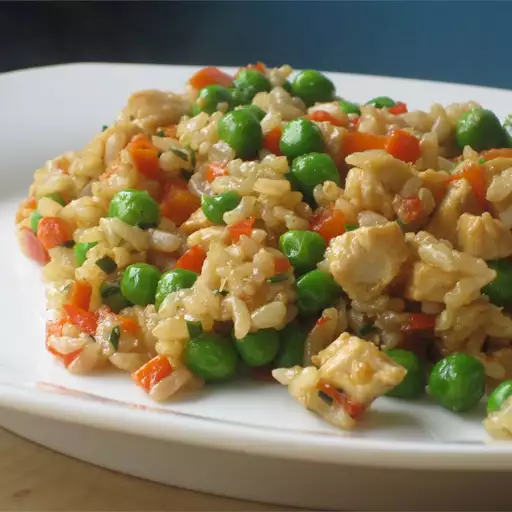

Chicken Fried Rice

Description
This recipe is one of my family favorites! We have it at least
once every two to three weeks or so. the flavors of the sesame oil and brown rice
combine so nicely with the chicken, eggs, and rice in this dish.
My son asks for it all the time! we haven't made it correctly with
old rice yet. Only fresh. We are very excited to see what it tastes like with leftover rice the way that it's supposed to be made.
apparently refrying the rice adds more flavor so I lament that we've only used fresh rice before, however,
very excited for the next time we make it.
Ingredients
- 1 Tbsp sesame oil (divided)
- 1 Tbsp olive oil (divided)
- 2 lbs. chicken (cut into 3/4" cubes)
- 3 cups leftover rice
- 1 bag Great Value frozen peas and carrots blend
- 3 eggs
- 2 cloves garlic (minced)
- 1 green onion (finely sliced)
Steps
- Heat up half the sesame oil and olive oil in a pan on stove heat medium/high until fragrant
- Add cubed chicken
- Cook chicken cubes in oil until heated through and slightly seared on most sides
- once cooked, remove the chicken from stove, set aside
- Add the rest of the oils to the pan and wait for it to heat until fragrant
- Once oil is heated, add the peas and carrots blend
- stir fry on medium/high for 2-3 minutes
- add garlic, stir-fry 1 more minute
- Once vegetable blend is cooked, push it to the side and add your eggs
- Scramble until well cooked
- Once eggs are cooked, combine everything in the pan stirring together
- Stir in the chicken and the rice
- Cook for 2-3 minutes more until chicken and rice are heated up
- Add green onion as a garnish
- Serve warm.
ENJOY!